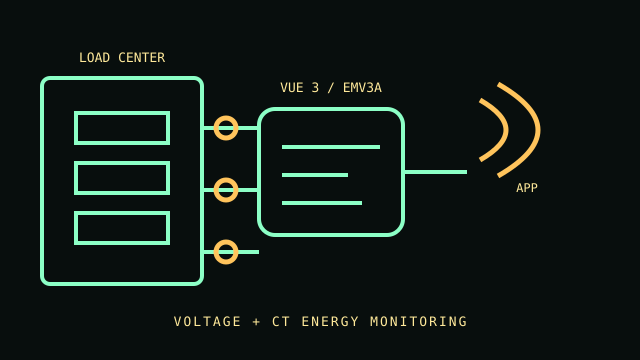

[ HOME ENERGY MONITOR // EMV3A ]
Emporia Vue 3 Home Energy Monitor
Panel-mounted energy monitor with split-core current transformers for mains and branch circuits. This EMV3A record describes the Vue 3 monitoring kit, not a breaker, protective device, or substitute for a revenue-grade utility meter.

IDENTIFICATION: Confirm the Vue 3 hardware and included CT kit by label. Circuit count and conductor layout depend on the purchased kit and panel.
Specifications & compatibility
| Exact model / function | Emporia Vue 3 Home Energy Monitor, EMV3A; home energy and circuit monitoring using current transformers and voltage sensing. |
|---|---|
| Measured metrics | Energy and electrical use for the mains and monitored branch circuits; the manufacturer documentation describes per-circuit monitoring. |
| Voltage / phase | Voltage sensing up to 264 VAC line-to-neutral per channel. Supported configurations include single-phase, split-phase and specified three-phase wye; do not infer delta support. |
| Current range / accuracy | Standard system uses 200 A mains CTs and 50 A branch CTs; included sensor count varies by kit. Published Vue 3 measurement accuracy is ±2%; apply only as specified by manufacturer conditions. |
| Display / network / output | No local display or wired measurement output. Wi-Fi reporting and configuration through the Emporia app. |
| Form factor | Compact panel-mounted monitor with external split-core CT sensors; installation inside an electrical load center. |
| Host compatibility | Emporia app on supported iOS and Android devices; 2.4 GHz Wi-Fi is required for connected use. No desktop-only interface is specified. |
| Electrical safety | Manufacturer identifies applicable UL safety certifications. Installation involves an energized electrical panel and must follow the exact installation guide and local code; use a qualified electrician. Do not exceed CT and voltage-sense ratings. |
Installation & archival notes
- Record whether the kit contains 8, 16 or other included branch CTs; a supported sensor count is not the same as a branch-breaker limit.
- Match phase, neutral and CT orientation to the manual. Incorrect conductor pairing can produce incorrect readings.
- Do not open or modify the monitor or panel while energized. Isolate equipment only according to local electrical procedures.
Manufacturer sources
- Emporia — Vue 3 product listingProduct identity, feature overview and available kit configurations.
- Emporia — Product documentationManufacturer support and product documentation index.
- Emporia — Vue 3 installation guideModel-specific installation, sensor, voltage and safety instructions.